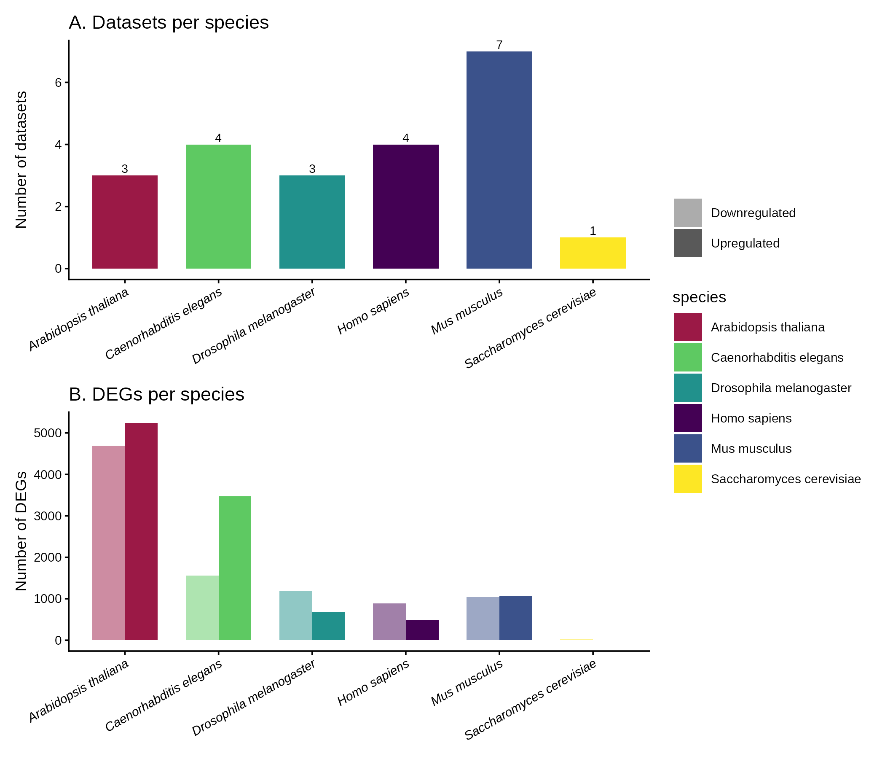
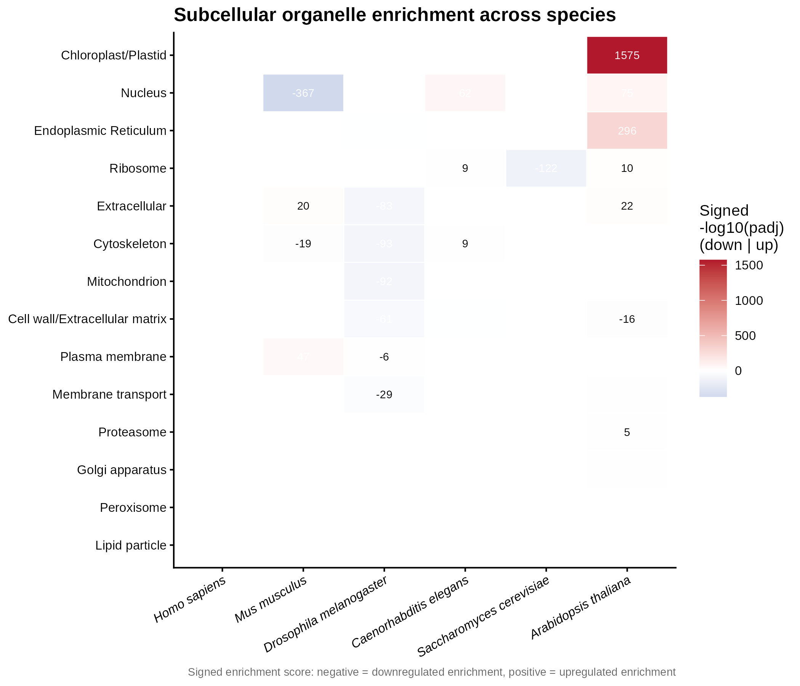
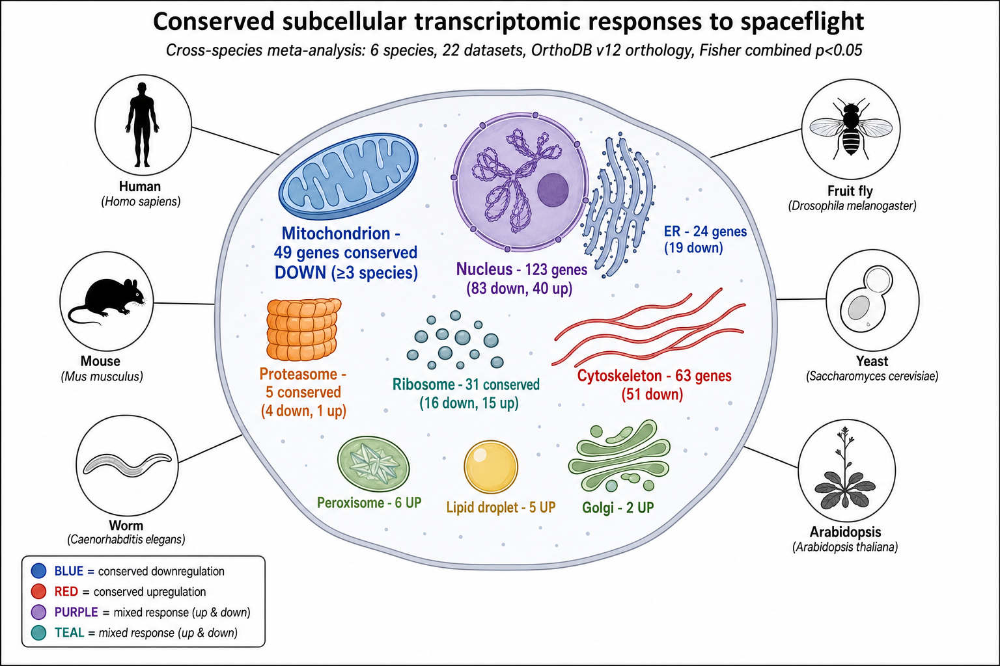

Spaceflight induces transcriptomic changes across organisms, but the extent to which subcellular and metabolic pathways are conserved across species remains poorly understood. We performed a cross-species meta-analysis of 22 transcriptomic datasets from the NASA Open Science Data Repository spanning six eukaryotic species (Homo sapiens, Mus musculus, Drosophila melanogaster, Caenorhabditis elegans, Saccharomyces cerevisiae, and Arabidopsis thaliana), encompassing 20,333 differentially expressed genes. Using a human-anchored orthology matrix built from OrthoDB v12 (18,030 genes; 651 with orthologs in all six species), we mapped DEGs to 16 subcellular compartments and applied Fisher's combined probability test to identify conserved organelle-level responses. We report a striking conserved downregulation of mitochondrial genes: 49 orthologs show significant, direction-consistent suppression across at least three species (minimum Fisher FDR = 7.7×10⁻⁶⁸), including components of Complex III (CYC1), Complex IV (COX5B, COX6A2, COX6B2), ATP synthase (ATP5F1A, ATP5PD) and the TCA cycle (IDH3A/B/G). In contrast, peroxisome, lipid-droplet and Golgi genes show conserved upregulation. These findings identify mitochondrial energy metabolism as a deeply conserved target of the spaceflight transcriptional response.
Conserved mitochondrial suppression across six eukaryotic species in spaceflight
A human-anchored, cross-species meta-analysis of spaceflight transcriptomics from the NASA Open Science Data Repository — asking which organelle-level responses are shared across a billion years of eukaryotic evolution.
Headline: a conserved downregulation of mitochondrial genes — 49 orthologs suppressed, direction-consistent, across at least three of six species — pinpoints mitochondrial energy metabolism as a deeply conserved target of the spaceflight transcriptional response.
Abstract
Highlights
Six species, one anchor
22 OSDR datasets across 6 species mapped onto a human-anchored OrthoDB v12 orthology matrix (18,030 genes).
Conserved mito suppression
49 mitochondrial orthologs down-regulated across ≥3 species (Fisher FDR down to 7.7×10⁻⁶⁸) — the most robust conserved response.
Directional contrast
Mitochondrion, ER and cytoskeleton down; peroxisome, lipid particle and Golgi up.
Pathway resolution
KEGG overlays show NAD⁺-dependent OxPhos enzymes diverge by species while CoA-dependent TCA enzymes stay conserved.
Selected figures



Data & code
- Manuscript:
manuscript/(npj-styled LaTeX inmanuscript/latex/) - Analysis code:
scripts/(R: DE, orthology, enrichment, KEGG figures) - Supplementary tables:
zenodo_repo/supplementary_tables/(S3, S4, S7, S8, S11) - Figures:
figures/(Fig 1–7, PNG + SVG)
Transcriptomic data derive from NASA OSDR / GeneLab (cite the individual OSD accessions); orthology from OrthoDB v12; pathways from KEGG. OSDR data remain subject to the NASA Open Data policy.